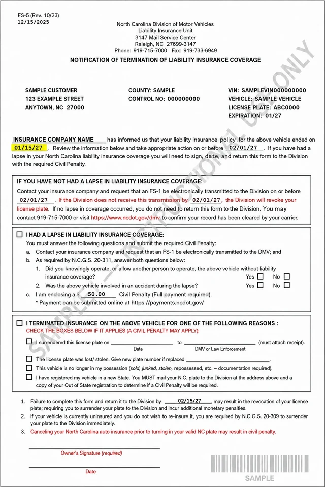

Step 1 of 4
Check the cancellation date first
Find the date shown on your letter. Then call your insurance agency and ask: “Was my policy active on this date?”
What did your agency confirm?
Do not guess and do not pay yet. If there was no real break in coverage, your carrier may be able to send an FS-1 showing continuous insurance so NCDMV can clear the fine.
